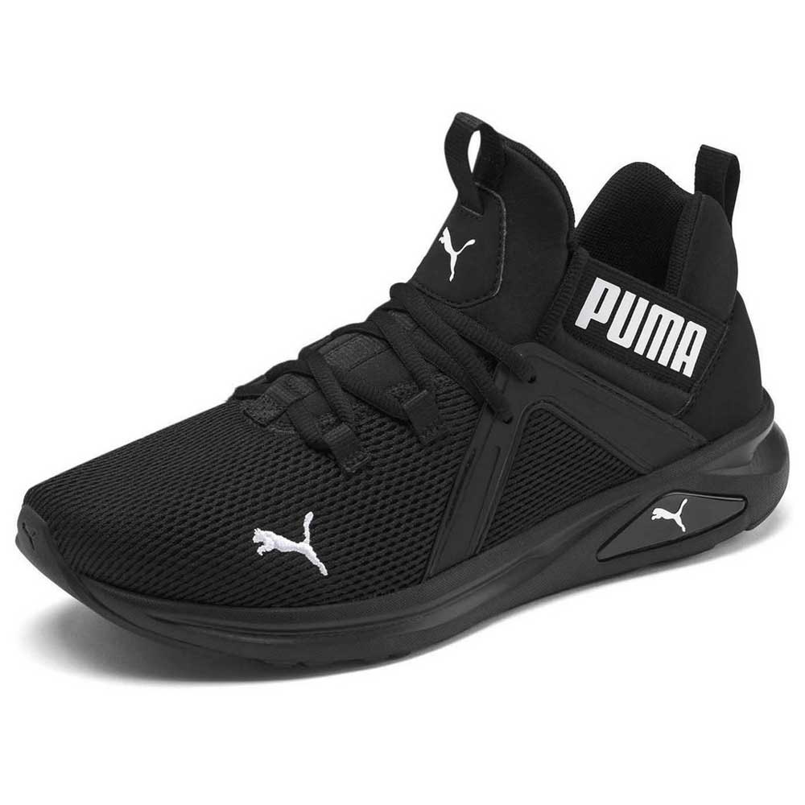
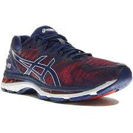
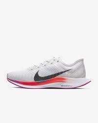

| Puma | Chaussure de running comfortable noter 5étoiles par nos client elle sont rembourés et équipé de rgosse semelle souple. | |||
|  | Pointure : | 40,41,42,43,44 | Matériaux: | Tissu |
| La couverture en caoutchouc sur la semelle extérieure procure traction et contrôle | La semelle intermédiaire est dotée d'un bijou en TPU pour un marquage unique | La tige présente une construction en coquille moderne audacieuse avec le logo PUMA exagéré sur le col | Les boucles de sangle qui remontent dans l’œil permettent de maintenir le laçage pendant l’usure | |
| Le tout nouveau Enzo 2 est un successeur intéressant à la franchise à succès d’Enzo. Un moule en TPU fin sur le panneau latéral offre une valeur extrême et une fonctionnalité tout à fait unique | 50€ |
|||
| Asics | Chaussure de running comfortable noter 5étoiles par nos client elle sont rembourés et équipé de rgosse semelle souple. | |||
|  | GT-2000 : | Couleur: Noir/Blanc | Matériaux: | Tissu |
| La couverture en caoutchouc sur la semelle extérieure procure traction et contrôle | La semelle intermédiaire est dotée d'un bijou en TPU pour un marquage unique | La tige présente une construction en coquille moderne audacieuse avec le logo Asics exagéré sur le col | Les boucles de sangle qui remontent dans l’œil permettent de maintenir le laçage pendant l’usure | |
| Le tout nouveau GT-2000 est un successeur intéressant à la franchise à succès GT-2000. Un moule en TPU fin sur le panneau latéral offre une valeur extrême et une fonctionnalité tout à fait unique | 90€ |
|||
| Nike | Chaussure de running comfortable noter 5étoiles par nos client elle sont rembourés et équipé de rgosse semelle souple. | |||
|  | Pointure : | 40,41,42,43,44 | Matériaux: | Tissu |
| La Nike Zoom Pegasus Turbo 2 est revisitée avec une empeigne ultra-légère, tandis que sa mousse innovante vous offre une réactivité révolutionnaire pour vos entraînements à la course de fond. | L'empeigne matelassée en mesh et synthétique est plus légère que celle du modèle précédent, tout en donnant une impression de respirabilité fidèle à la réalité. | La semelle extérieure en caoutchouc optimise l'absorption des chocs et assure une adhérence sur toutes les surfaces. | Col du talon qui s'éloigne du pied pour plus de confort autour du tendon d'Achille | |
| La semelle intermédiaire Nike ZoomX ultra-légère offre le meilleur retour d'énergie de Nike Running. L'ajout de mousse offre amorti et légèreté à chaque pas. | 150€ |
|||